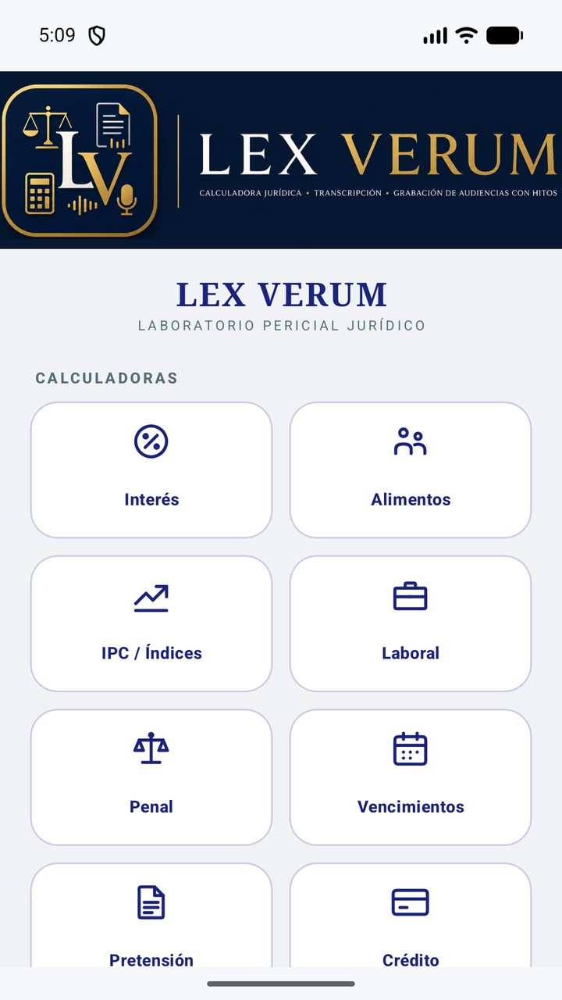
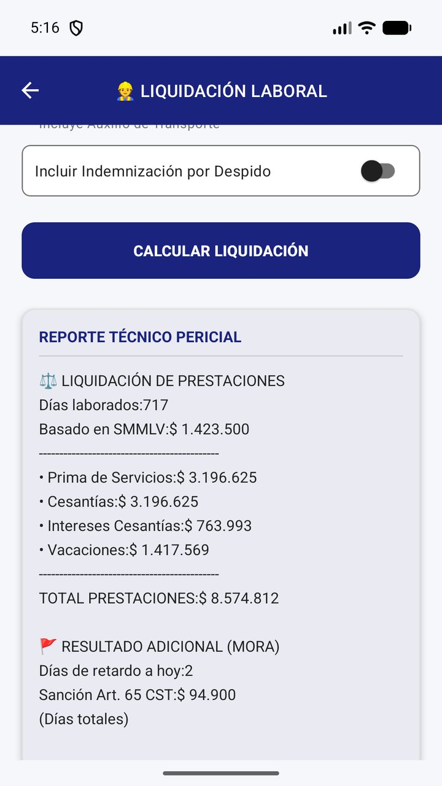
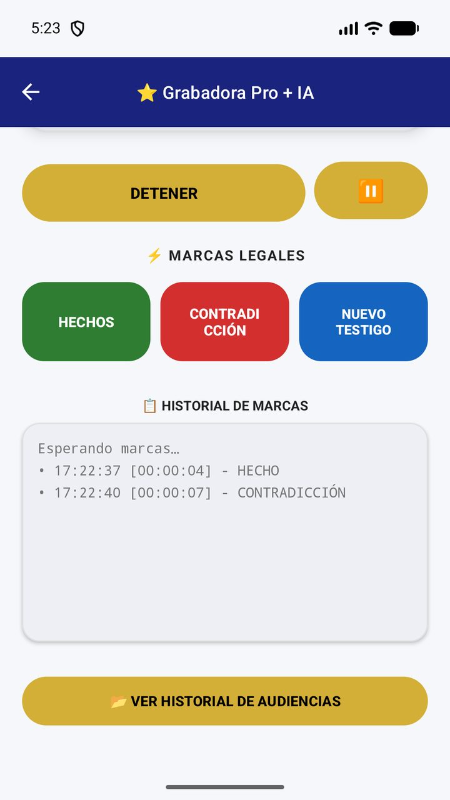
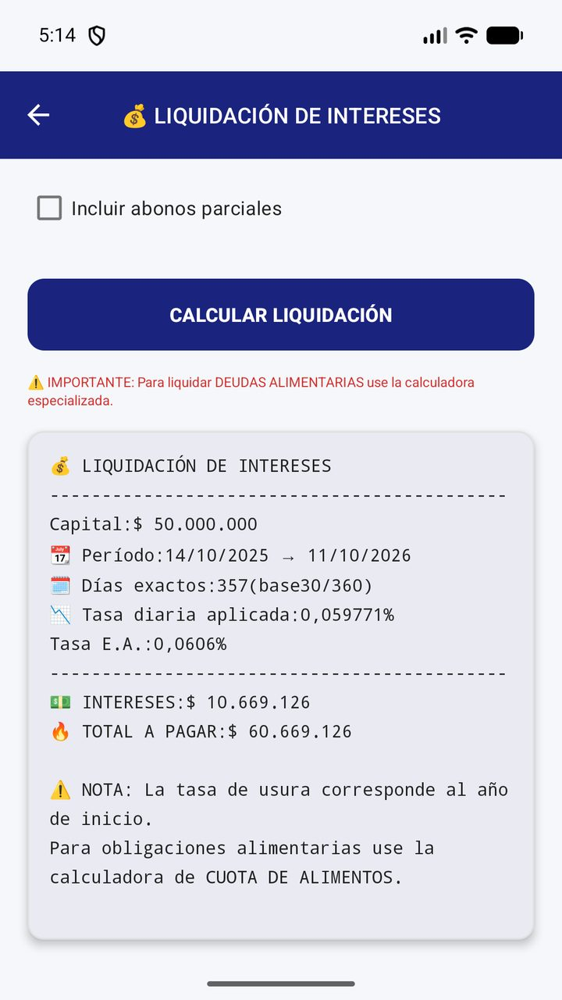
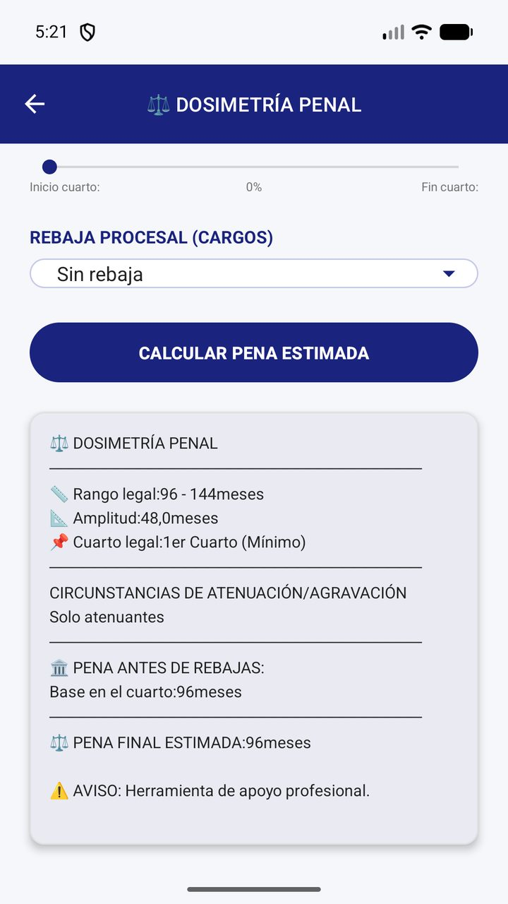
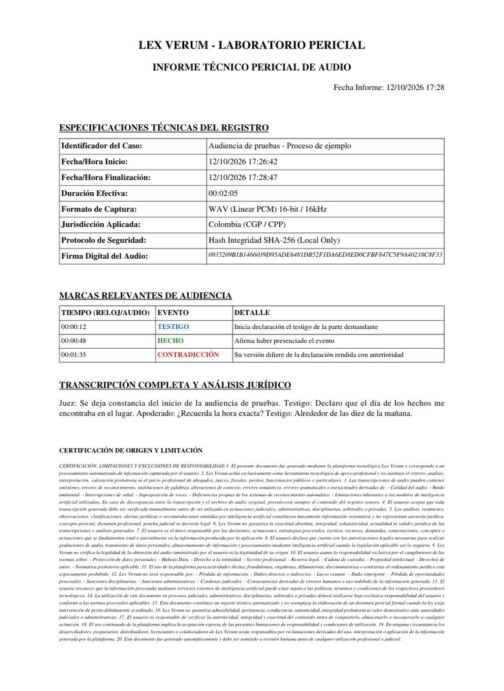

Android · Disponible en Google Play
Android · Disponible en Google PlayCalculadoras jurídicas precisas y grabación de audiencias con marcado de hitos, en el mismo celular que ya llevas al estrado. Calcula, graba, marca lo importante y entrega un PDF listo para radicar.



Algoritmos dedicados a resolver liquidaciones e indexaciones directamente desde el terreno, con módulos estandarizados según el marco normativo vigente.


Tasación de obligaciones comerciales, civiles y moratorias, con interés simple o compuesto y abonos parciales.
Liquidación de cuotas de sostenimiento, prestaciones y derechos irrenunciables; en la laboral, con el salario mínimo del año que elijas.
Indexación de capital, actualización de pérdidas de valor adquisitivo y cuantificación objetiva del daño para demandas.
Dosificación punitiva, cuartos de pena y efecto de las rebajas procesales.
Conteo estricto de términos procesales con alertas críticas preventivas, para que ningún plazo te sorprenda.
Colombia, México, Estados Unidos, España, Chile y Perú, y liquidación laboral también para Ecuador, Argentina, Uruguay, Panamá, El Salvador y Brasil.
Documentación de audio ininterrumpida con marcas legales de un solo toque. Cada hito queda fijado en el instante exacto de la grabación, para volver a él sin escuchar horas de audio.
Consolida la identificación técnica del registro, las marcas relevantes y la transcripción en un informe en tamaño folio, con cláusulas de blindaje legal.

Lex Verum Pro trabaja con tus llaves: tú controlas los motores y los costos. Estos son los cuatro que puedes enlazar, todos con capa gratuita.
Análisis jurídico principal. Botón «Obtener Clave Gemini Gratis»: inicia sesión con Google, crea un proyecto con «New Project», copia la API Key y pégala en la app. Espera 2 minutos antes de la primera validación.
Transcripción rápida. Toca «Obtener Clave Groq Gratis», entra a «API Keys» y pulsa «Create API Key». Copia la cadena que inicia con gsk_ y pégala para activar las transcripciones.
Motor de respaldo. En «Motores de Respaldo (Emergencia)» pulsa «Obtener Llave OpenRouter», crea la clave en «Keys» (inicia con sk-or-v1-) y pégala para tener contingencia si Gemini falla.
Estratega legal alterno. En la misma sección pulsa «Obtener Llave DeepSeek», genera el token en «API Keys» (inicia con sk-) y pégalo para robustecer el análisis de tu teoría del caso.
Mira el flujo completo en pantalla: el video muestra la calibración en vivo de cada llave.
Al reproducirlo, el video se carga desde YouTube (Google), que puede instalar cookies y tratar tus datos según su propia política. Más información.
Conscientes del secreto profesional y de la reserva legal que ampara las actividades de abogados, peritos y médicos, Lex Verum Pro no almacena, centraliza ni transmite registros de audio ni información procesal confidencial a servidores externos no autorizados.
Toda la información recopilada mediante el marcado de hitos, cálculos matemáticos o almacenamiento de actas reside de forma exclusiva en los contenedores de datos internos del dispositivo del usuario final, bajo estrictos estándares de almacenamiento local.
Disponible para Android en Google Play. Escanea el código con la cámara de tu celular o toca el botón.